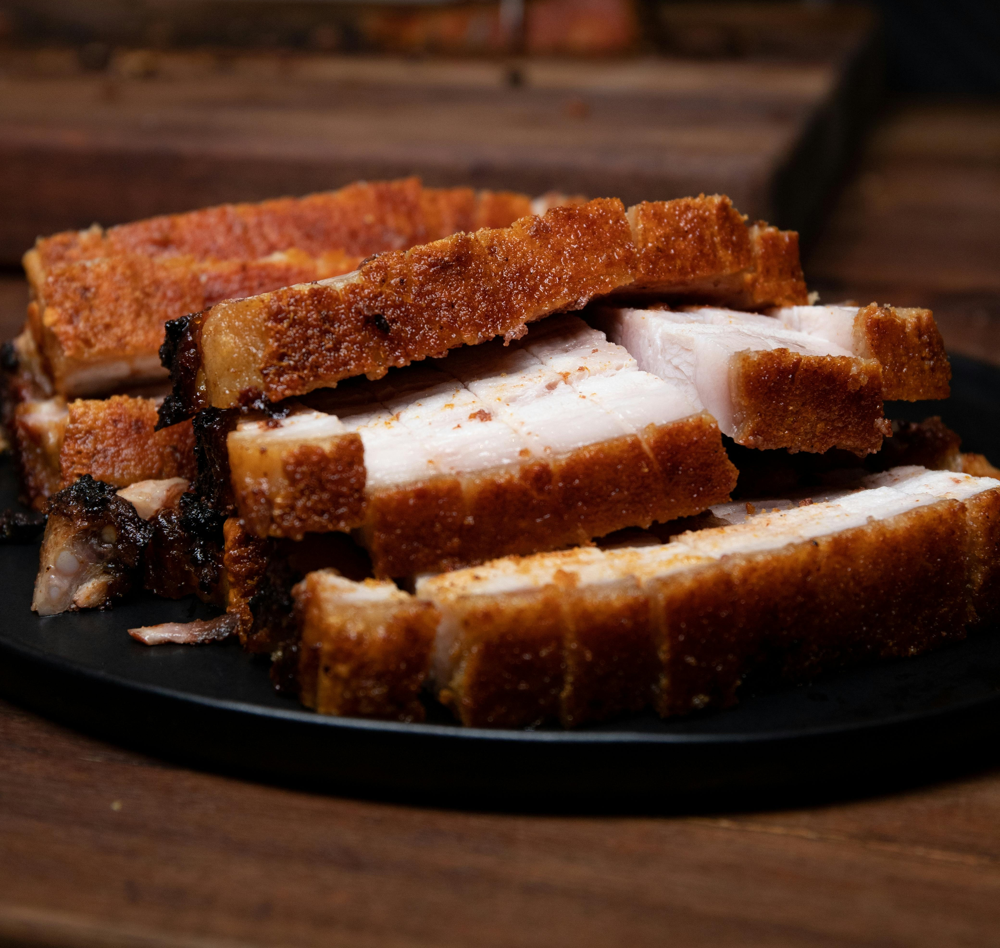

Home
Crispy Pork Belly

Photo by:
Amanda Lim.
Description
Crispy pork belly is all the rage, thanks to social media, food bloggers, and celebrity chefs
with too much time on their hands. It's a common sight on menus across the land;
you can't channel-surf past a food show without seeing it. It also helps that people
are no longer terrified to eat a little fat.
Ingredients
- ½ pound whole pork belly, skin removed
- ½ teaspoon smoked paprika, or to taste
- kosher salt and ground black pepper to taste
- 1 tablespoon olive oil, or to taste
Steps
- Preheat the oven to 200 degrees F (95 degrees C).
- Season pork belly all over with smoked paprika, salt and black pepper.
-
Wrap pork in parchment paper; wrap a second time in aluminum foil; wrap a
third time in another sheet of aluminum foil.
- Place pork packet in a baking dish.
-
Bake in the preheated oven until tender, about 6 hours. Let cool in wrappings to
room temperature; place cooled packet in the refrigerator and chill for
8 hours to overnight.
-
Unwrap chilled pork; reserve any rendered fat that falls away when
unwrapping pork.
-
Cut pork into 6 equal portions. Cut 1/8x1/8-inch slashes in the
fat&-side of pork. Season with salt.
-
Heat 2 tablespoons reserved pork fat in a skillet over medium heat.
Place pork belly, fat-side down, in hot fat; cook until browned on all
sides and heated through, 5 to 10 minutes.
- Transfer pork belly to a plate, drizzle with olive oil, and season with pepper.